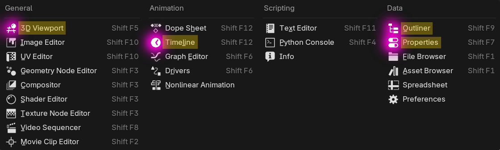

Blender Guide
Simple beginners guide
Top
Topbar and Workspaces

Areas & Editors
Areas are areas... where you can view Editors such as the 3D Viewport or the Timeline

Find all the Editors by pressing the icon on the top left of the Area
You can move them around, duplicate and delete.
You can even save your new layout in the Workspaces, but that comes later.
Move the camera around (Middle Mouse / Shift+Middle Mouse)

Move (G), Scale (S) and Rotate (R)
Press it once, don't hold it.
Tip: Then press X, Y, or Z to lock the change to a certain axis.
Remember: Undo: Ctrl+Z. Redo: Ctrl+Shift+Z
TIP:
You can't move things closer or further away, so view them from the side first
Also try the colorful viewport axis
Adding Objects (Shift+A)
TIP:
Can't find something? Try scrolling
Properties!!!
COLORS COLORS COLORS
Define your scene, camera and objects
The camera is the framing of your final image
Exercise: Make a scene with 2 objects and a light nearby
Notice the Usefulness of the 3D Viewport's "Transform" Sidebar
Try rotating (R) an object along the (Z) axis
Viewport Shading and Rendering
In the top right of the 3D Viewport you have the option to change the method of displaying your scenes. The default is "Solid", there's also "Wireframe", and "Rendered" which will be the preview of your final image.
EEVEE or Cycles? which Render Engine should you use?
They dictate your final image, so you can view them in the "Rendered" Viewport Shading.
Cycles brings photorealism out-of-the-box, glass behaves like glass, etc. The only downside is it's very computationally heavy. So I like to make it easier on my PC by drastically reducing the 'Max Samples' in my Viewport
After Hitting Render (F12) in the Topbar, pay attention to the time remaining, it could be seconds or hours, to make it faster you can decrease the 'Max Samples' for the Render, or reduce the resolution in the Output button right under the Render button
FYI: "Rendering Animation" by default won't make a video, each frame will be an image.
How Cycles works:
Anyways
Here's a long video from start to render
Blender-Themes:

More info:
the end
the end
the end
the end
the end
Modes of the 3D Viewport
In Object Mode, you select whole objects.
And in Edit Mode you can select by vertices, edges or faces
Switch Modes (TAB) and Select All (A)
TAB is a shortcut for switching between your current mode (Object Mode by default) and Edit Mode.
Tip: Make sure to firstly pick the object(s) in Object Mode that you want to work on in Edit Mode
Edit mode
Tip: Make sure to firstly pick the object(s) in Object Mode that you want to work on in Edit Mode

The Camera
This is how the framing of your final render will look like